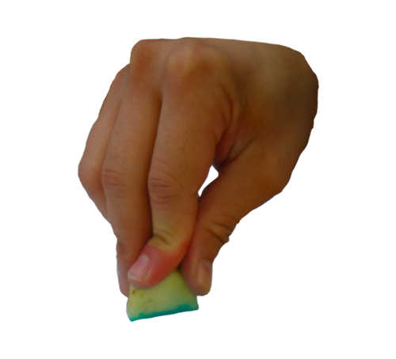
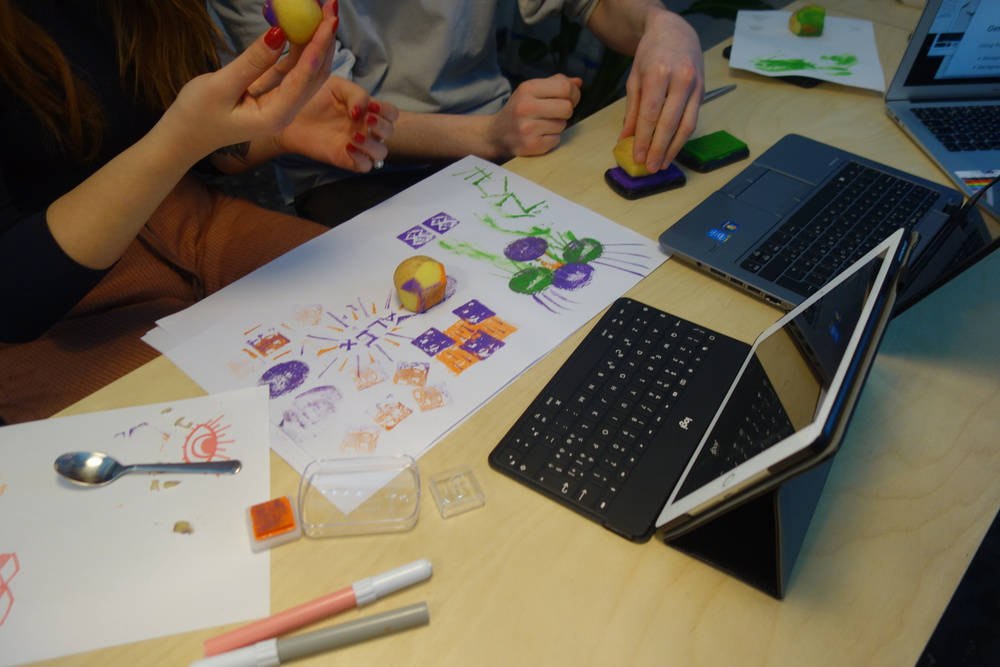
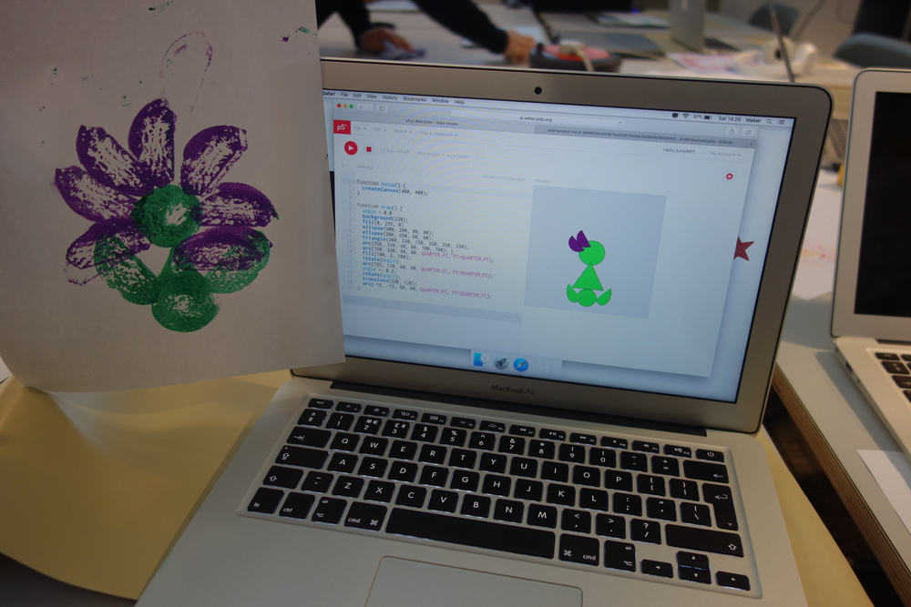
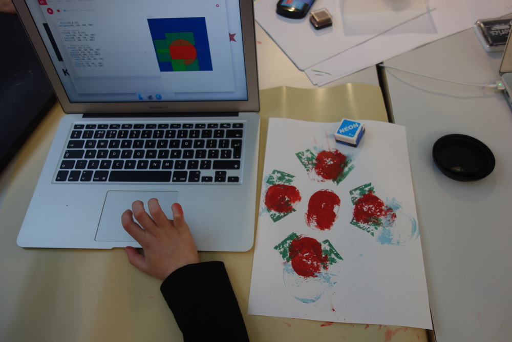
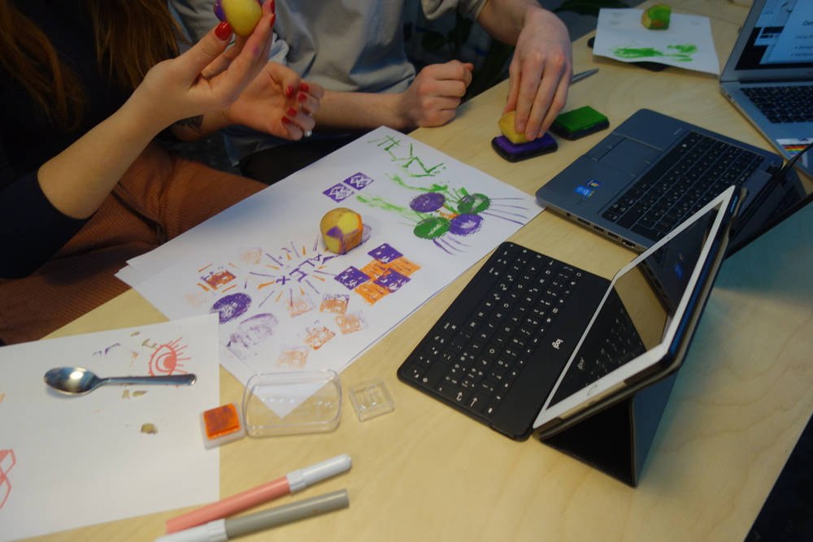
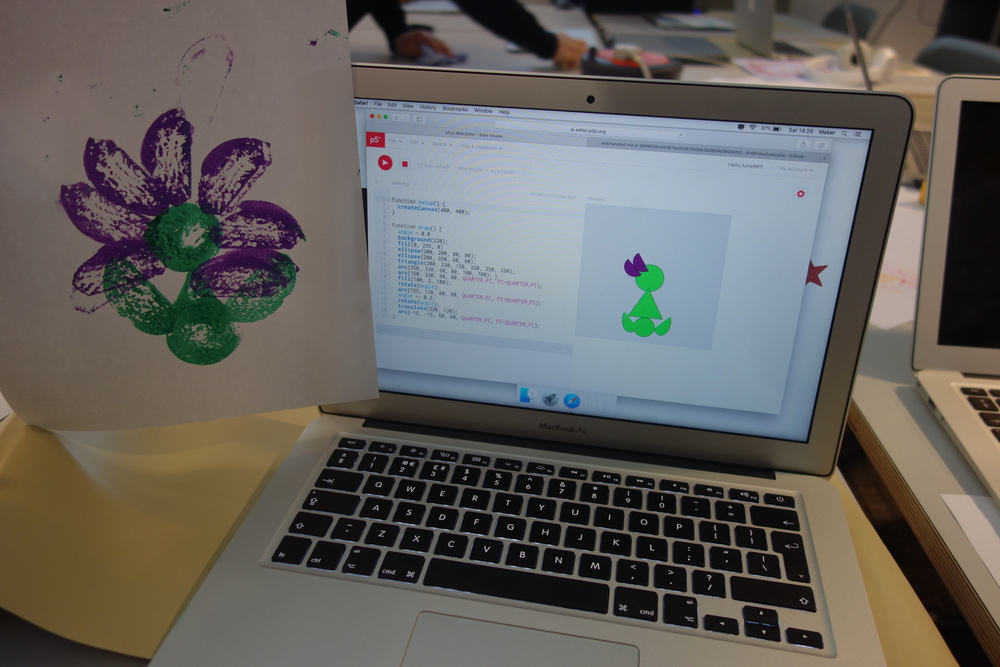
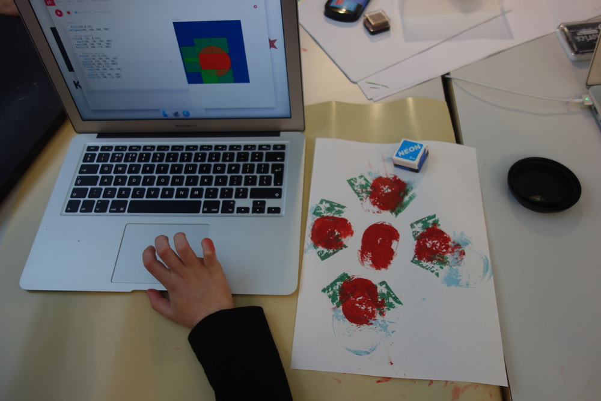

I started the potato programming with Uni students as a way to introduce them to programming in a fun way, and create a culture of play (rather than seriousness). Students responded really well, and really focused on cutting out the potatoes! They found it relaxing which is probably the opposite as a normal intro to programming. The first time I ran this (with the Uni students) we used the potato prints as a way to get an insight into logic, which is the foundation of coding, but we didn’t have time to actually make things with code. I iterated this a few times and found a way to work between the prints and programmes.


 




